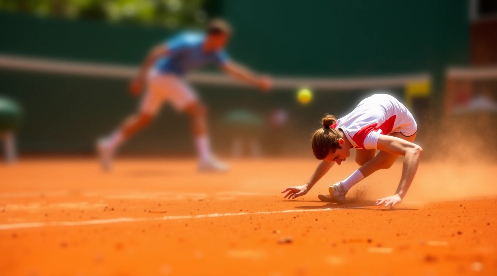
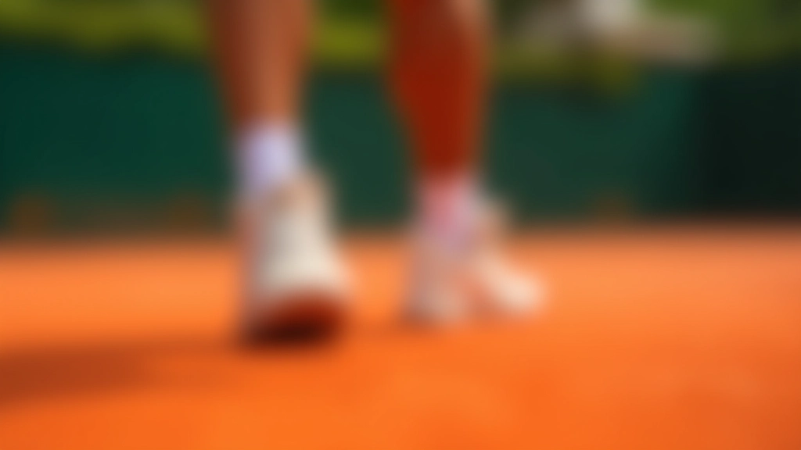
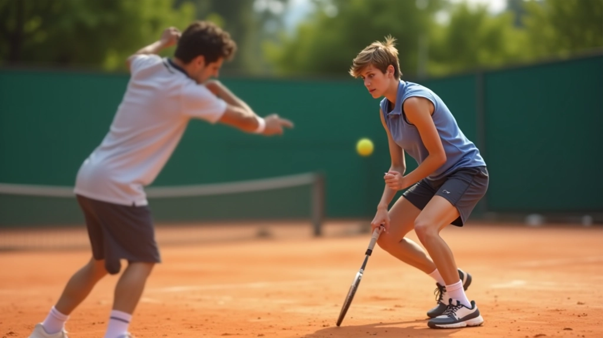

رحلتنا في تعليم تقنيات الانزلاق على الملاعب الترابية
في ملعب الانزلاق للتنس المصري، نحن مكرسون لتطوير لاعبي التنس الشباب من خلال تدريب متخصص وتوجيه عملي. منذ تأسيسنا عام 2020، ركزنا على إتقان تقنيات الحركة والانزلاق على الطين — الأساس الحقيقي للعبة حديثة.

كيف بدأت قصتنا
لاحظنا أن معظم اللاعبين الشباب يتلقون تدريباً عاماً، لكنهم يفتقرون إلى التخصص الحقيقي في تقنيات الملاعب الترابية. الطين ليس مثل الأسفلت — إنه يتطلب فهماً عميقاً للحركة والتوازن والتوقيت. هذا هو المكان الذي جاءت فيه فكرة ملعب الانزلاق للتنس المصري.
التركيز على الأساسيات
نحن نبدأ من الصفر مع كل لاعب. لا نتسرع نحو التقنيات المتقدمة حتى يتقن اللاعب المبادئ الأساسية — الخطوات الصحيحة، توزيع الوزن، زاوية الجسم على الطين.
بيئة التعلم المناسبة
ملاعبنا الترابية في نادي هليوبوليس توفر السطح المثالي للتدريب. لا تعني أن لديك ملاعب جيدة أنك ستتعلم بشكل أفضل فحسب — بل إنك تتعلم على نفس الظروف التي ستواجهها في المنافسات الحقيقية.
المتابعة المستمرة
كل جلسة تدريب ليست مجرد تمارين عشوائية. نحن نتابع التقدم، نلاحظ الأخطاء، ونصحح المسار. هذا ما يحول التدريب إلى تحسن حقيقي ملموس.
طريقتنا في التدريب
ملعب الانزلاق للتنس المصري يعتمد على منهج عملي مباشر. نحن لا نؤمن بالنظريات البعيدة عن الممارسة. كل ما نعلمه، يمارسه اللاعبون فوراً على الطين.
التدريب ينقسم إلى مراحل واضحة: البناء الأساسي، ثم التطوير التدريجي، وأخيراً التطبيق في الألعاب الفعلية. لا نسرع العملية، لكننا نضمن أن كل خطوة تُبني على أساس متين.
- تحليل فردي لكل لاعب وأسلوب حركته
- تمارين متدرجة من السهل إلى المعقد
- ملاحظات مفصلة بعد كل جلسة تدريب
- تطبيق عملي مباشر على ملعب الطين
- تصحيح فوري للأخطاء أثناء التدريب

ماذا نعلم بالضبط
تقنيات الانزلاق
من الخطوات الأولى على الطين إلى الانزلاقات المتقدمة. نعلم اللاعبين كيفية التحكم بسرعتهم واتجاههم والعودة إلى موضع الاستعداد بسرعة.
قوة وتوازن
الانزلاق ليس فقط عن المهارة — إنه يتطلب قوة جسدية وتوازناً استثنائياً. تمارينا تبني هذه المتطلبات الأساسية.
تنفيذ الضربات
الانزلاق مفيد فقط إذا كان يمكنك تنفيذ ضربة قوية أثناء الحركة. نعلم اللاعبين كيفية الجمع بين الحركة والتقنية.
التحمل والسرعة
اللاعب الذي يتحرك أسرع وأطول يفوز. نركز على بناء القدرة على التحرك بكفاءة على مدار المباراة الكاملة.

التزامنا تجاهك
في ملعب الانزلاق للتنس المصري، نحن لا نقيس النجاح بعدد اللاعبين الذين ندربهم فقط. نقيسه بالتحسن الفعلي الذي نراه في كل فرد. لاعب واحد يتقن الانزلاق بشكل صحيح يعني أكثر لنا من عشرة لاعبين يتعلمون بسرعة دون إتقان حقيقي.
نحن نؤمن بالتدريب الصادق. لا وعود بسيطة بأن تصبح نجماً في أسبوعين. ما نعده هو مسار واضح وممنهج نحو تحسن حقيقي. نحن نعمل مع كل لاعب حسب وتيرته الخاصة.
تدريب الانزلاق على الطين يتطلب صبراً وانتظاماً. هذا ما نقدمه — بيئة محترفة، مدربون يفهمون اللعبة بعمق، وملاعب مناسبة تماماً.
«نحن لسنا هنا فقط لتعليم التقنيات. نحن هنا لبناء لاعبين يفهمون اللعبة ويحبونها، ويمتلكون الأساس الذي يحتاجونه للنجاح على أي ملعب طيني في العالم.»
معلومات مهمة
المحتوى المقدم على هذا الموقع مخصص للأغراض التعليمية والإعلامية. نتائج التدريب تعتمد على عوامل متعددة بما فيها الالتزام الشخصي، الخبرة السابقة، التطبيق العملي، والظروف الفردية. قصص النجاح المشاركة تمثل تجارب فردية وقد لا تعكس النتائج النموذجية. ننصح جميع الزوار بالالتزام بالتدريب المنتظم والاستشارة مع المدربين المؤهلين قبل البدء في أي برنامج تدريب جديد. الإصابات الرياضية محتملة — دائماً مارس التدريب بحذر وتحت إشراف مدرب مؤهل.